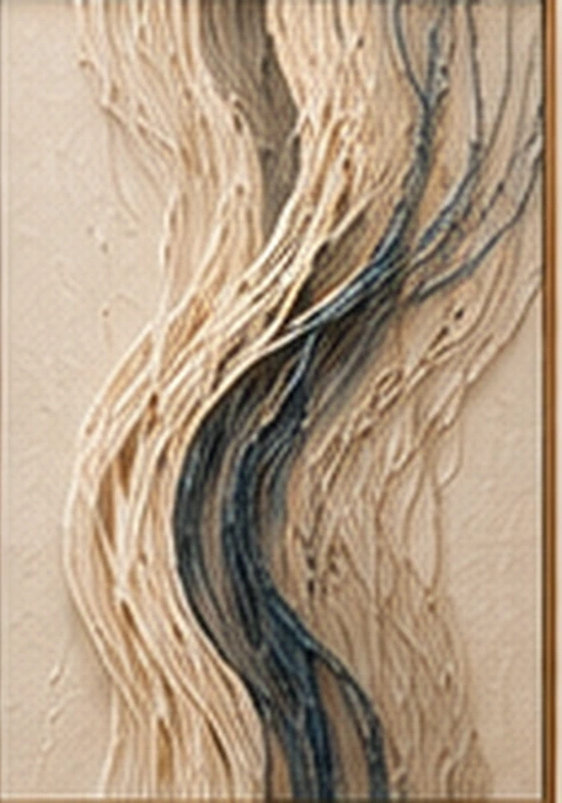
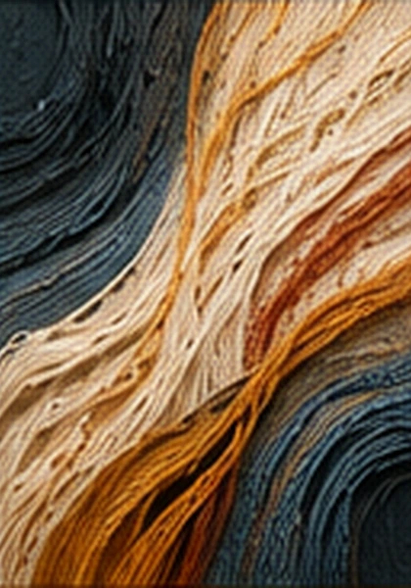
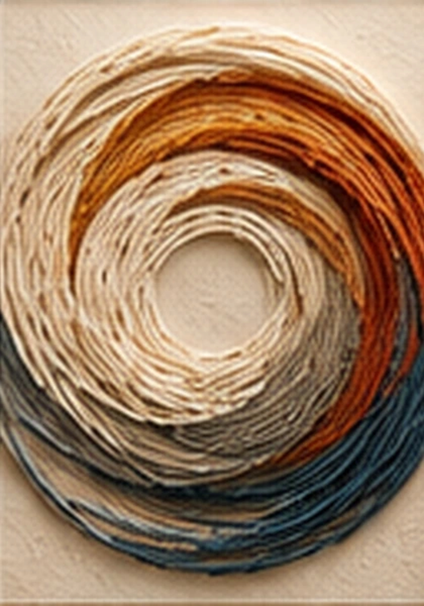

01 / 10
Поток
Движение и равновесие
Фактура, линия и тишина. Коллекция произведений, которые меняют характер пространства.
ПРОГУЛЯТЬСЯ ПО ГАЛЕРЕЕ ↓


Десять композиций в высоком разрешении. Авторская материальность и тонкие медные рамы в мягком свете арт-галереи.
Искусство, которое становится частью вашего пространства.
ВЕРНУТЬСЯ К ВИДЕО ↗